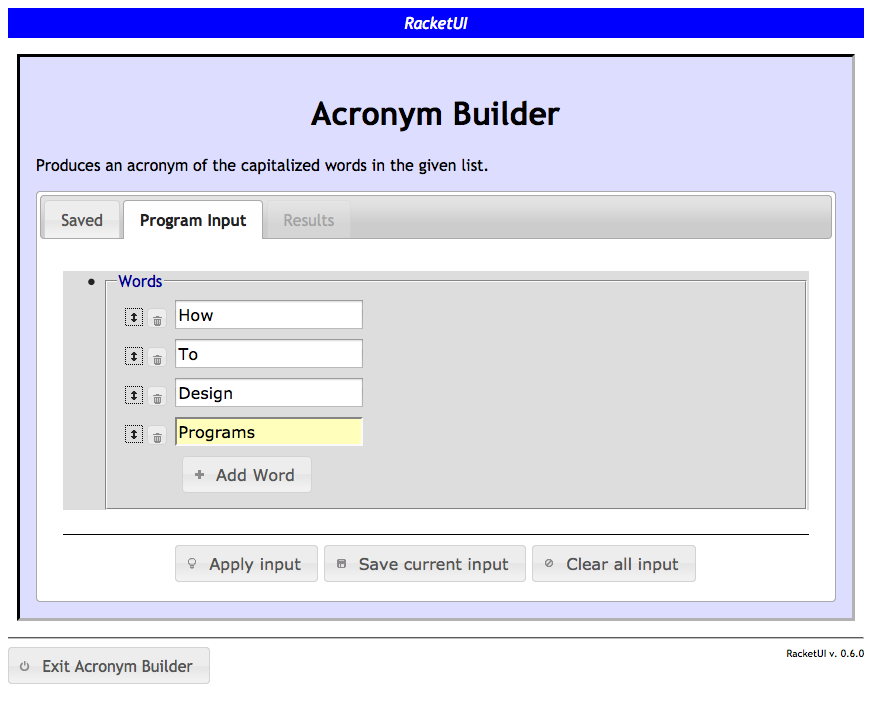
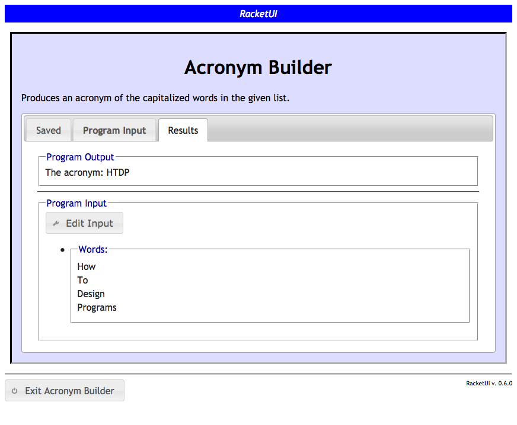

1 Quick Start
Consider the following program (written in "Beginner Student Language"), which builds an acronym from the capitalized words in a list of strings:
; acronym : listof string -> string (define (acronym a-los) (cond [(empty? a-los) ""] [(cons? a-los) (if (string-upper-case? (string-ith (first a-los) 0)) (string-append (string-ith (first a-los) 0) (acronym (rest a-los))) (acronym (rest a-los)))]))
A web application for this can be automatically generated by including the following at the top of the program:
| (require racketui) | package: racketui |
and then putting the following code beneath the definition of acronym:
(web-launch "Acronym Builder" (function "Enter some words to build an acronym." (acronym ["Words" (listof+ ["Word" string+])] -> ["The acronym" string])))
Running this program should launch a web browser with a user interface that allows input of a list of words (strings) and provides controls to apply the function to the input and view the result (screenshot below). See the section on Using the Web Interface for details on the functionality provided by the generated web interface.

After entering input values and clicking the "Apply input" button, the entries will be validated and then used as parameters to the underlying acronym function, producing a results page:
